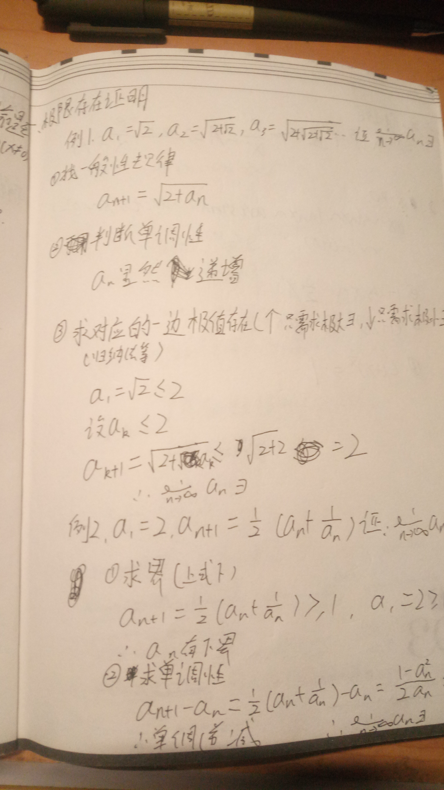
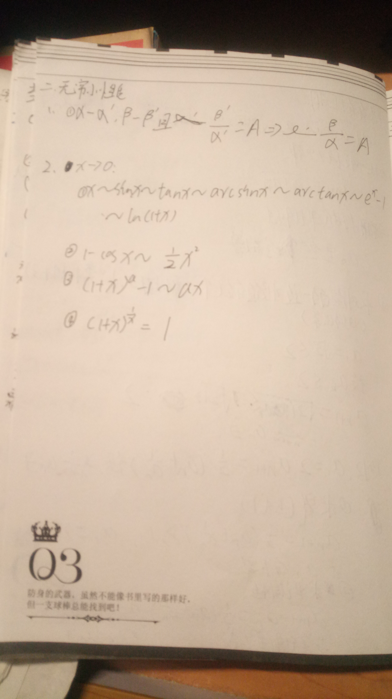
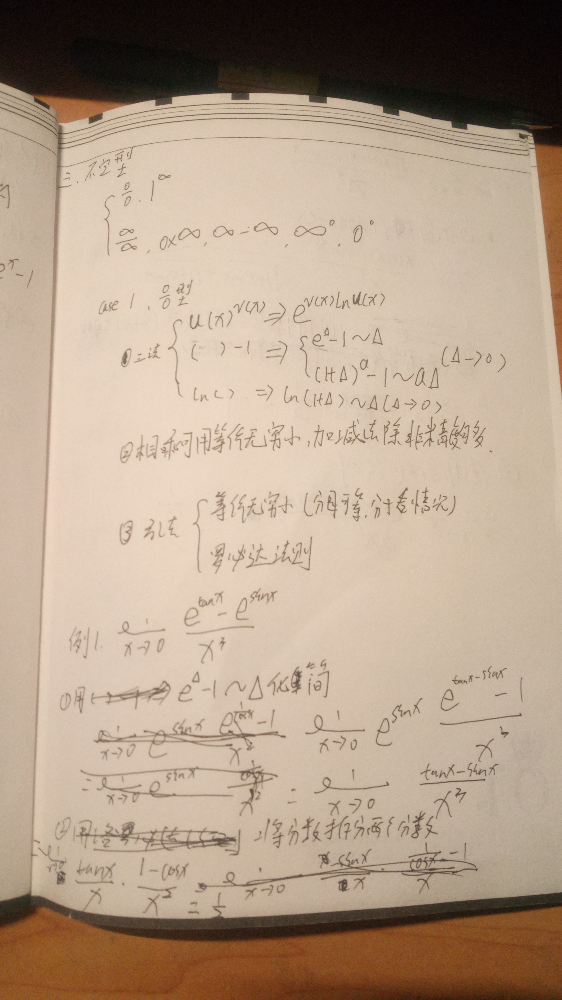
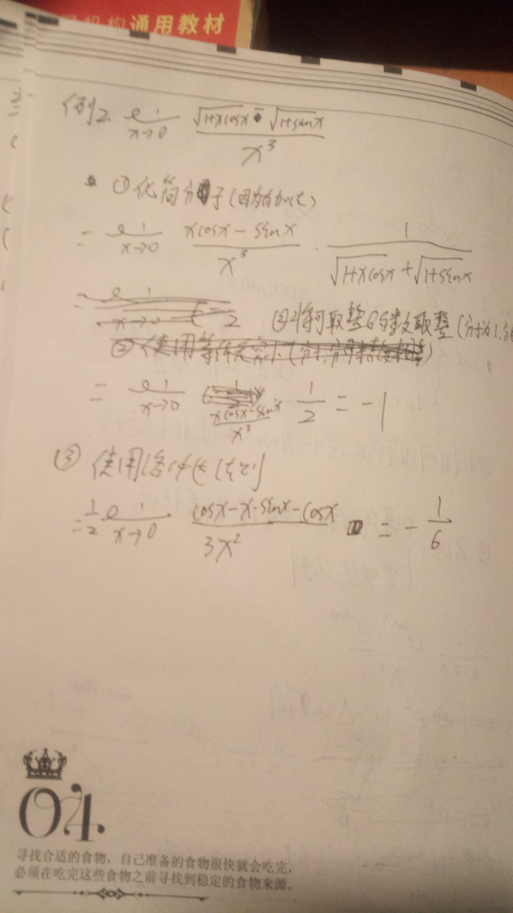
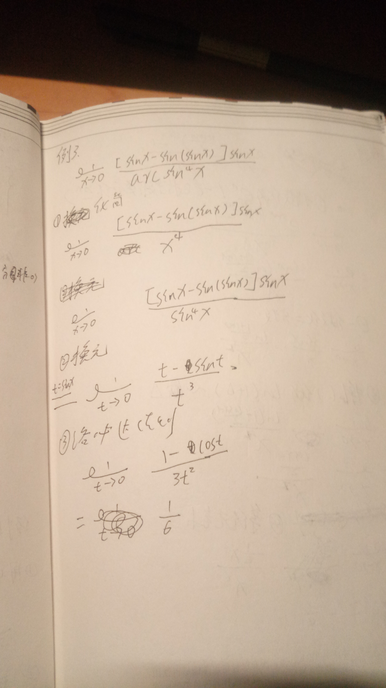
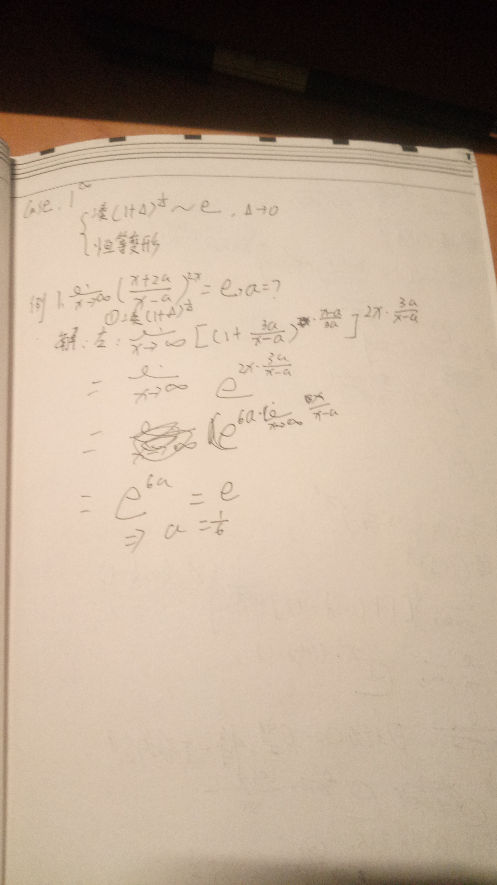
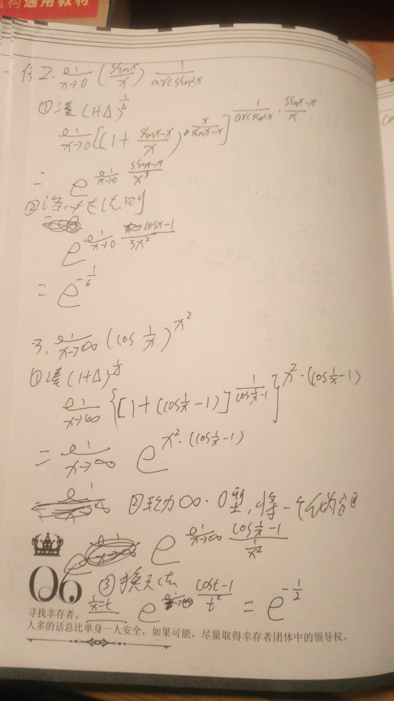
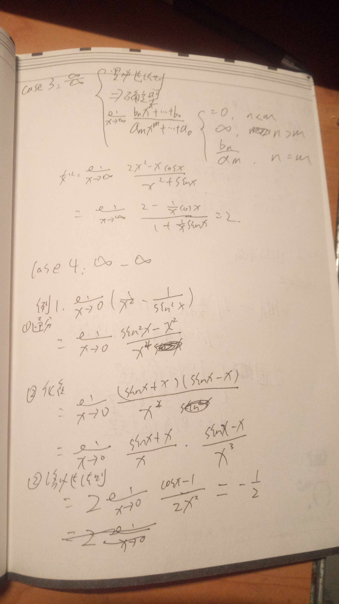
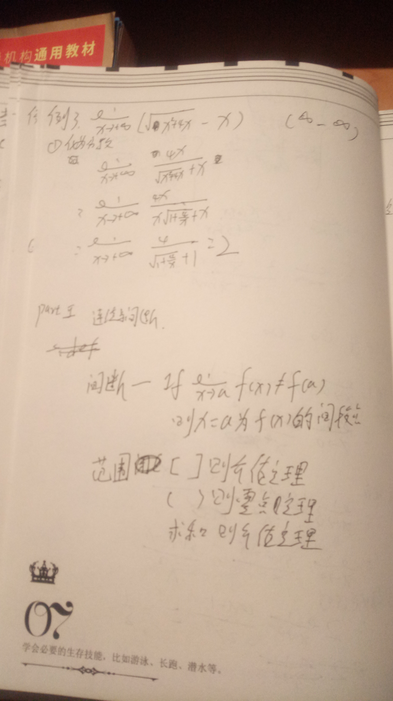
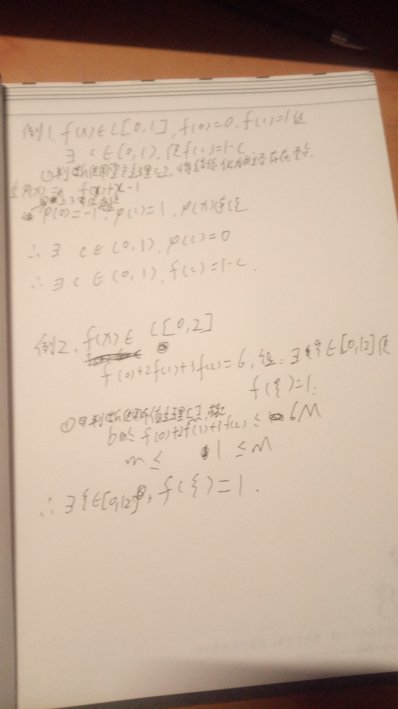

时间真的是看着很长，用着很短。
本来计划高数一天一章，现在第一章光听视频就要200分钟，加上总结什么的乐观估计要7个小时。在撞上满课的时候，
哪来这七个小时。根据经验，突然大幅度加大学习强度，很可能无法持续，甚至有可能功亏一篑。
但那个计划表可以看出即便按这个进度学到5月份，仍然只学了一小部分，离目标还很远。而且学习时间长的话及其难以
保证学习质量，没有了回顾，学了就忘那不就等于做了无用功吗？
抱怨止住，进入正题。高数我发现可以采用题型加解法的方法学习：
题型：
1）极限存在的证明
第一种：
1.找一般性规律
2.判断单调性
3.求对应的边界
第二种：
1.求边界
2.求单调性


2）0/0型
第一种：
1.化简
2.将分数拆成两个分数相乘

第二种：
1.化简（加法优先化简）
2.使用洛必达法则

第三种：
1.化简（分母可直接等价，分子看情况）
2.换元
3.洛必达法则

第四种：
1.化简（看见指数便用e）
2.一分数化作二分数
3.化简
4.等价无穷小
1的无穷次方
第一种：
1.从（1+无穷小）的无穷小的倒数的次方等价于e
2.化简

第二种：
1.凑
2.转化为其他型
3.换元

无穷/无穷
方法一：
1.化简
2.约分
无穷*0
1.将一个化为分数，转化为其他型
无穷-无穷
方法一：
1.通分
2.化简
3.洛必达法则

方法二：
1.化为分数，转化为其他型

连续与间断
1.判断用零点定理还是介值定理（“（）”用零点，“【】”或“各项和”用介值定理）
